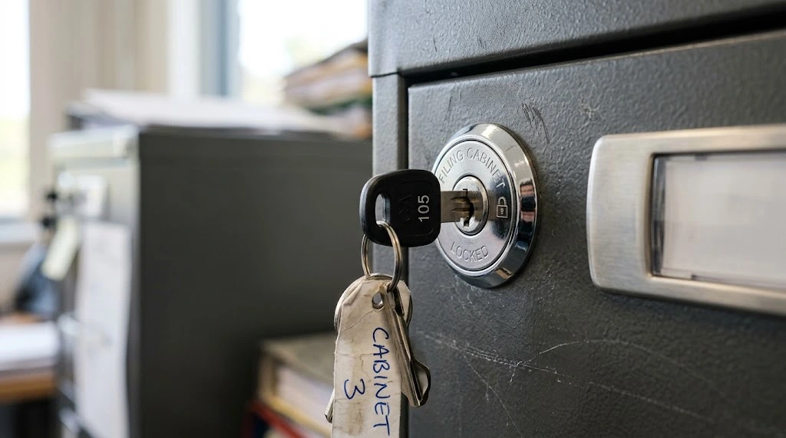

Apa Itu Lemari Besi Kantor dan Fungsinya?
Lemari besi kantor adalah lemari penyimpanan berbahan logam yang dirancang untuk menyimpan dokumen, arsip, atau barang kantor lainnya dengan tingkat keamanan lebih tinggi dibanding lemari kayu biasa. Struktur logamnya membuat lemari ini lebih tahan terhadap benturan maupun percobaan pembongkaran.
Fungsi utama lemari besi kantor adalah melindungi dokumen penting dari risiko kerusakan fisik maupun akses oleh pihak yang tidak berwenang, sehingga banyak digunakan oleh instansi pemerintah, sekolah, dan perusahaan yang menyimpan arsip dalam jumlah besar.
Bagaimana Spesifikasi Plat Baja pada Lemari Besi Kantor?
Ketebalan plat baja menjadi salah satu faktor utama yang menentukan kekuatan lemari besi kantor. Sebagian produk di pasaran menggunakan plat dengan ketebalan sekitar 0.8mm sebagai standar umum untuk kebutuhan penyimpanan dokumen kantor sehari-hari.
Selain ketebalan, kualitas pelapisan cat anti karat juga berperan penting dalam menjaga daya tahan lemari, terutama jika ditempatkan di ruangan dengan tingkat kelembapan yang cukup tinggi. Semakin baik lapisan pelindungnya, semakin kecil risiko korosi pada permukaan logam dalam jangka panjang.

Apa Kelebihan Sistem Kunci Sentral pada Lemari Besi Kantor?
Sistem kunci sentral memungkinkan seluruh laci atau pintu lemari terkunci secara bersamaan hanya dengan satu putaran kunci, sehingga lebih praktis dibanding lemari dengan kunci terpisah untuk setiap laci.
Selain kepraktisan, sistem ini juga membantu meningkatkan keamanan karena pengguna tidak perlu membawa banyak kunci berbeda untuk setiap bagian lemari, sehingga risiko kehilangan kunci dapat diminimalkan.
Jenis-Jenis Lemari Besi Kantor Berdasarkan Konfigurasi
Lemari besi kantor hadir dalam beberapa jenis konfigurasi yang disesuaikan dengan kebutuhan penyimpanan dokumen di berbagai instansi.
Lemari Arsip Besi dengan Pintu Ayun
Lemari arsip besi dengan pintu ayun umumnya digunakan untuk menyimpan dokumen dalam jumlah besar yang disusun secara vertikal, cocok untuk ruang arsip dengan akses penyimpanan jangka panjang.
Filing Cabinet dengan Beberapa Laci
Filing cabinet dengan beberapa laci lebih cocok untuk kebutuhan penyimpanan dokumen yang perlu diakses secara rutin, karena laci dapat ditarik keluar dan dokumen lebih mudah dikelompokkan berdasarkan kategori.
Apa yang Perlu Diperhatikan Sebelum Membeli Lemari Besi Kantor?
Sebelum membeli, penting memastikan ketebalan plat baja sesuai dengan tingkat keamanan yang dibutuhkan, terutama jika dokumen yang disimpan tergolong penting atau rahasia. Periksa juga jenis sistem kunci yang digunakan dan pastikan mekanismenya berfungsi dengan baik.
Pertimbangkan pula ukuran dan konfigurasi lemari sesuai kebutuhan ruang penyimpanan, serta pastikan supplier dapat memberikan garansi produk dan layanan purnajual yang jelas.
Kesimpulan
Perhatikan ketebalan plat baja lemari besi kantor sesuai kebutuhan keamanan dokumen. Sistem kunci sentral memberikan kepraktisan sekaligus keamanan tambahan. Pilih konfigurasi lemari, baik pintu ayun maupun filing cabinet, sesuai pola akses dokumen sehari-hari. Cek kualitas lapisan anti karat terutama untuk ruangan dengan kelembapan tinggi, serta pastikan supplier menyediakan garansi dan layanan purnajual yang jelas sebelum membeli.